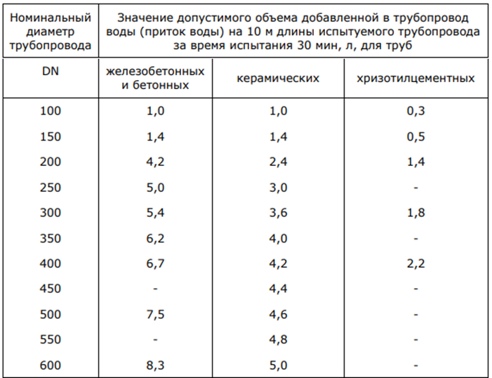

Акты испытаний и опробований для ВК, НВК

После полного комплекса работ по монтажу внутренних и внешних систем канализации необходимо провести испытания систем ВК и НВК, чтобы избежать аварий в процессе запуска трубопровода в эксплуатацию.
Испытания внутренней системы (ВК)
Испытания проводят до начала отделочных работ.
Нормативный документ, регламентирующий испытания – СП 73.13330.2016 «Внутренние санитарно-технические системы зданий» и СП 40-02-2000 «Проектирование и монтаж трубопроводов систем водоснабжения и канализации из полимерных материалов».
Порядок проведения испытаний:
- Подготовка трубопроводов к испытанию.
- Промывка или продувка участка (системы) трубопровода: 3 раза в течение 10 минут воздухом с перерывом 2 часа или 3 раза со скоростью подачи воды 1-1,5 м/сек до появления чистой воды с перерывом 2 часа. Составляется акт о проведении промывки (продувки) трубопровода.
- Испытания гидростатическим или манометрическим методами.
Гидравлический метод – заключатся в заполнении системы водой. Этот способ помогает обнаружить течь в местах соединений элементов и труб. После заполнения системы водой проводят осмотр систем. Проверка считается успешной при отсутствии протечек. Испытания гидравлическим методом систем канализации и водоснабжения проводят при температуре не ниже 5 °С.
Манометрический метод – при этом способе испытаний трубопроводную систему заполняют воздухом и выдерживают в этом давлении определенное время.
Испытания наружной системы (НВК)
Нормативный документ, регламентирующий испытания - СП 129.13330.2019 «Наружные сети и сооружения водоснабжения и канализации»
Напорные трубопроводы испытывают на прочность и герметичность гидравлическим способом.
В зависимости от климатического района может быть применен пневматический способом с расчетным давлением:
- 0,5 МПа - для подземных чугунных, хризотилцементных и железобетонных;
- 0,035 МПа - для подземных стеклокомпозитных труб с муфтовыми соединениями
- 1,6 МПа - для подземных стальных;
- 0,3 МПа - для надземных стальных.
Испытания проводят в два этапа:
- предварительное – выполняется после засыпки пазух на половину диаметра и присыпкой с открытыми сварными (стыковыми) соединениями.
- приемочное – выполняют после полной засыпки трубопровода в присутствии всех членов комиссии с последующим подписанием акта.
Трубы из стали, композитных, чугунных, ж/б и х/ц труб испытывают при длине менее 1 км за одно испытание.
Трубы из ПВД, ПНД и ПВХ испытывают участками не более 0,5 км. ПВД, ПНД и ПВХ.
Порядок проведения испытания на прочность:
- Повышают давление в трубопроводе до испытательного и путем подкачки воды поддерживают его в течение не менее 10 минут, при этом не допускается снижение более 0,1 Мпа
- Снижают испытательное давление до внутреннего расчетного и поддерживая его производят осмотр трубопровода на наличие дефектов.
- Проводят испытание заново или устраняют дефекты, если они были обнаружены.
После испытания на прочность, проводят испытание на герметичность:
- Повышают давление до испытательного на герметичность.
- Фиксируется время начала испытания и начальный уровень воды в мерном баке.
- Производят наблюдение за падением давления в трубопроводе, если:
- в течение 10 минут давление упадет не менее чем на 2 деления шкалы манометра, но не ниже внутреннего расчетного, то наблюдения заканчивают.
- в течение 10 минут давление упадет не менее чем на 2 деления шкалы манометра, наблюдение за снижением давления продолжают до момента, пока давление не упадет не менее, чем на 2 деления манометра. Продолжительность наблюдения должна быть не более: 3 часа – ж/б трубопроводы, 1 час – чугунные, х/ц и стальные, 2 часа – для стеклокерамики. Если в течение этого времени давление остается выше внутреннего расчетного, производят сброс воды в мерный бак, или измеряют объем сбрасываемой воды другим способом.
- в течение 10 минут давление упадет ниже внутреннего расчетного, то испытания трубопровода прекращают, ведут поиск и устранение дефектов, поддерживая в трубопроводе расчетное давление.
Безнапорный трубопровод испытывают дважды:
- предварительные испытания – до засыпки
- приемочные испытания – после засыпки в присутствии всех членов комиссии с последующим подписанием акта.
Колодцы сети испытывают двумя способами: если гидроизоляция колодца внутренняя, то проводят испытания путем определения объема добавляемой воды, а если гидроизоляция наружная – путем определения притока воды в них. Если гидроизоляция колодцев не предусмотрено проектом, то их не испытывают.
Предварительное испытание трубопроводов на герметичность производится в течение 30 мин. Давления необходимо поддерживать добавлением воды в стояк или в колодец, не допуская снижения уровня воды в них более чем на 20 см. Трубопровод и колодец проходят испытание, если при осмотре не обнаружено утечек воды.
Герметичность при приемочном испытании определяется одним из следующих способов:
- по измеряемому в верхнем колодце объему добавляемой в стояк или колодец воды в течение 30 мин. Понижение уровня воды в стояке или в колодце допускается не более 20 см;
- по измеряемому в нижнем колодце объему притекающей в трубопровод грунтовой воды.
Трубопровод признается выдержавшим приемочное испытание на герметичность, если определенные при испытании значения объемов добавленной воды по первому способу (приток грунтовой воды по второму способу) не более указанных в таблице 12 СП 129.13330.2019

{kind=link}